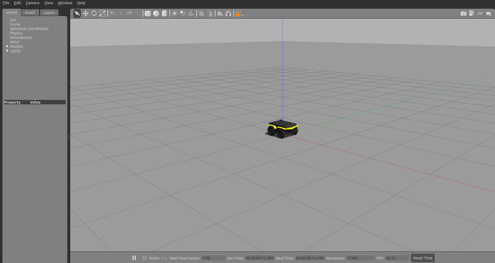
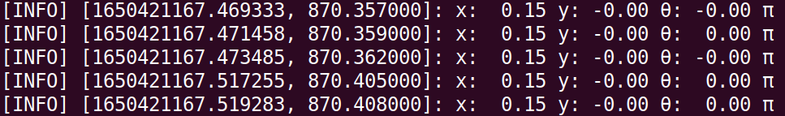
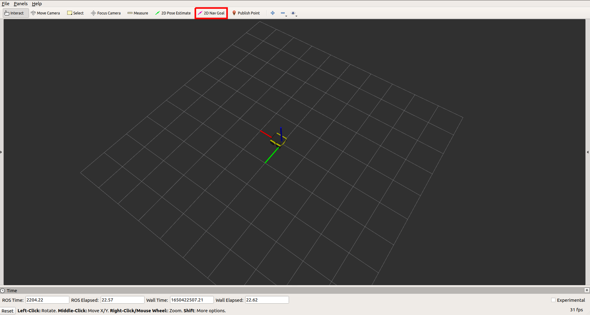
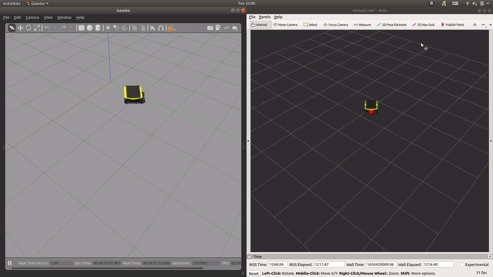
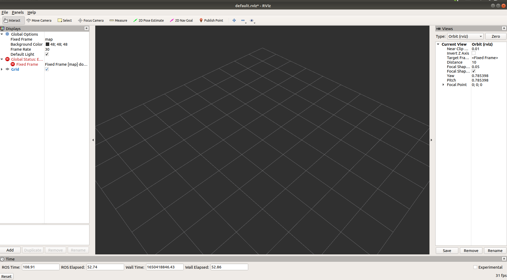
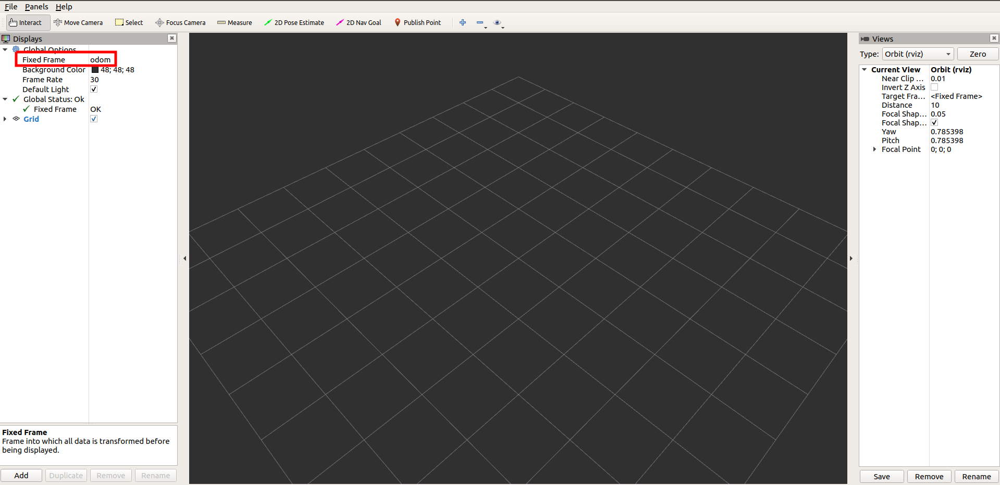
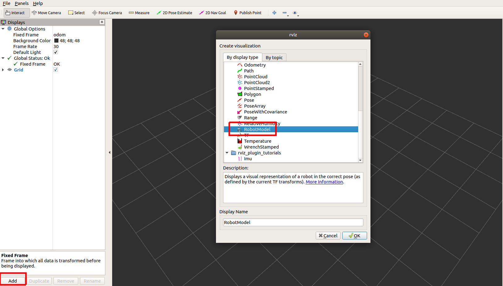
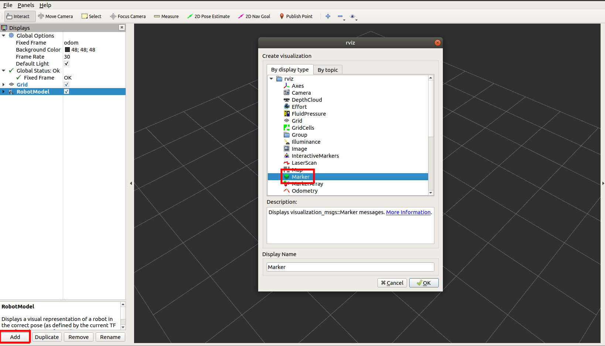
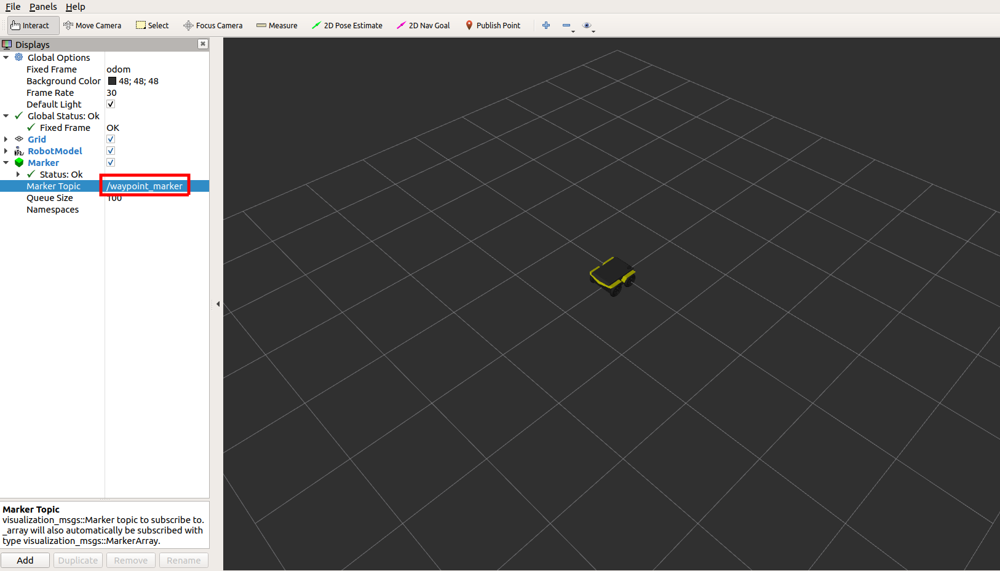

This is a simple PID controller written in Python3 for controlling differential-drive vehicles, such as Heron Unmanned Surface Vehicle (USV), Jackal Unmanned Ground Vehicle (UGV), and Husky UGV to a desired position/waypoint. We will use the Jackal simulator as a running example.
| Heron USV | Jackal UGV | Husky UGV |
|---|---|---|
 |
 |
 |
Table of contents
Jackal Simulation
To install Jackal simulator, make sure you have a working ROS installation on your Ubuntu desktop. We use Ubuntu 18.04 which corresponds to ROS melodic. Change the ROS distribution accordingly based on your OS version, and install the following Jackal simulator packages:
sudo apt-get install ros-melodic-jackal-simulator ros-melodic-jackal-desktop ros-melodic-jackal-navigation
Make sure your ~/.bashrc has the following settings and remember to source ~/.bashrc after modifying it:
export ROS_MASTER_URI=http://localhost:11311
export ROS_HOSTNAME=localhost
To launch simulated Jackal in an empty world, run the following command:
# Terminal #1
roslaunch jackal_gazebo empty_world.launch
We should see the simulated vehicle on an open ground.

Tracking PID Controller
ROS Melodic does not support Python3 natively but our code is written in Python3. To bypass this problem, we can install ROS Noetic in a conda environment following the instructions given by RoboStack. If your ROS distribution supports Python3 or you have an existing conda environment, feel free to skip this step. Assuming that you have a ROS noetic conda environment called robostackenv, clone and build the tracking_pid package in a catkin workspace.
# Terminal #2
conda activate robostackenv
mkdir -p ~/robostack_ws/src
cd ~/robostack_ws/src
git clone https://github.com/Weizhe-Chen/tracking_pid.git
cd ..
catkin build
. devel/setup.bash # `.` is equivalent to `source`
rosrun tracking_pid tracking_pid_node.py
If everything goes well, we shall see the following terminal output, showing the robot’s pose.

Open another terminal (terminal #3), run rviz → select File → Open Config → find jackal.rviz in tracking_pid/rviz/.

Now we can send a goal using the 2D Nav Goal tool.

We can adjust the controller parameters on-the-fly using rqt_reconfigure:
rosrun rqt_reconfigure rqt_reconfigure

(Optional) Configuration of RViz
In case opening jackal.rviz does not work, we can configure RViz manually via the following steps. Open a new terminal and run rviz:
rviz

Change the Fixed Frame to odom.

Add a RobotModel.

Add marker for visualizing the goal/waypoint.

Change the marker topic to /waypoint_marker
